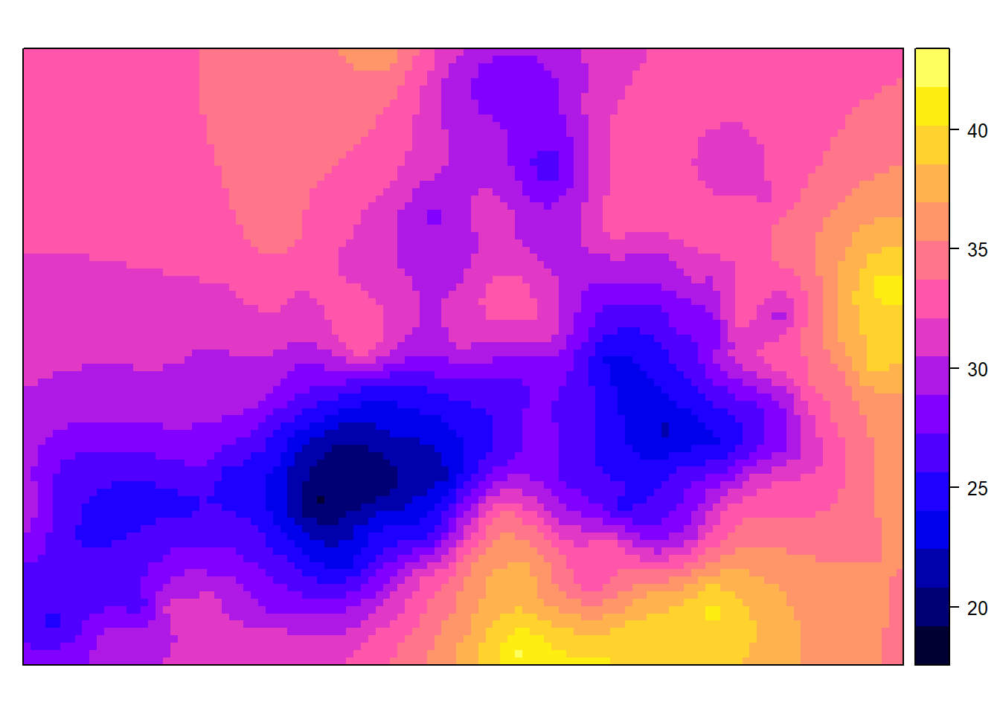
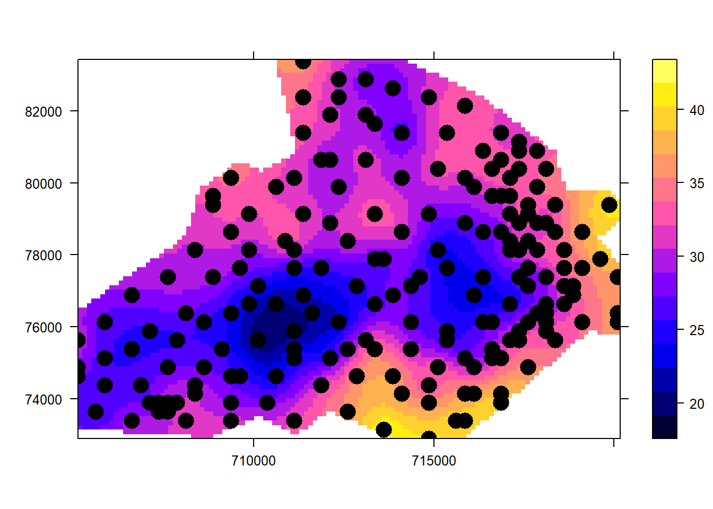
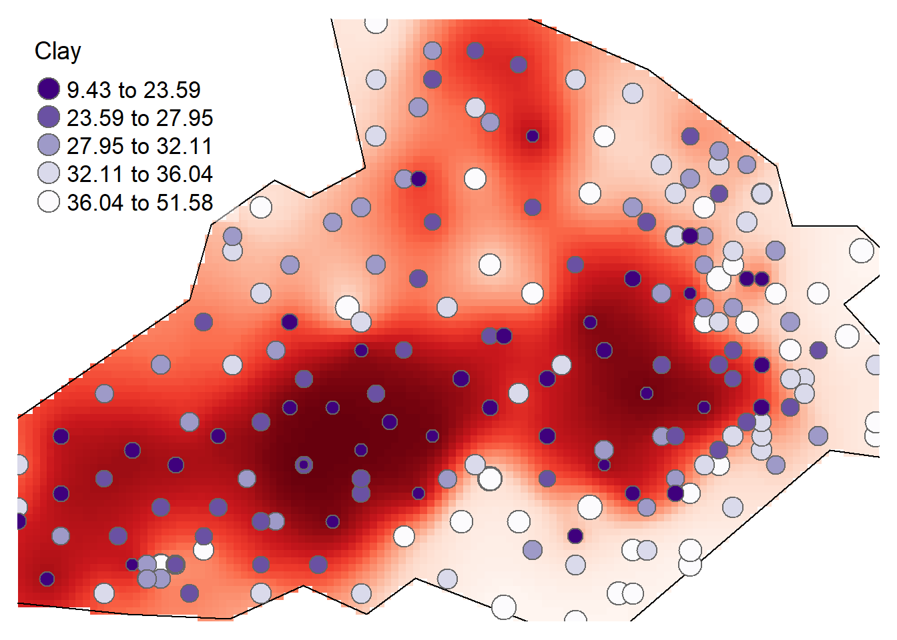

Geostatistical prediction/prediction
Geostatistical interpolation differs from non-geostatistical interpolation approaches in that it assumes the data point values represent a sample from some underlying true population. By analyzing the sample it is possible to derive a general model that describes how the sample values vary with distance (and optionally, direction). A generalized model used conventional to describe spatial correlation of phenomena with respect to distance and direction is term as the Variogram. The variogram model may then be used to interpolate, or predict (a process called kriging), values at unsampled locations, in much the same way as with deterministic interpolation. If the samples meet various additional conditions it may also be possible to provide estimated confidence intervals for these predictions. Geostatistical interpolation methods attempt to address questions like:
- how many points are needed to compute the local average?
- what size, orientation and shape of neighborhood should be chosen?
- what model and weights should be used to compute the local average?
- what errors (uncertainties) are associated with interpolated values?
Estimating Spatial correlation: the Variogram
In geostatistics, spatial correlation has traditionally been modelled by a variogram. The variogram (semi-variogram) explains the degree to which nearby locations have similar values using semi-variance.
In standard statistical problems, correlation can be estimated from a scatterplot, when several data pairs {a, b} are available. The spatial correlation between two observations of a variable z(x) at locations \(x\) and \(x+h\), where h is the separating distance (lag), cannot be estimated, as only a single pair is available i.e. correlations can not be computed from two variables with a single observations. Geostatistics adopt stationarity assumption in order to compute spatial correlation. Stationarity underpins the practicality of geostatistics; it is assumption enables us to treat data as though they have the same degree of variation over a region of interest (Oliver & Webster, 2015). A commonly used form of stationarity is termed as intrinsic stationarity, which assumes that the process that generated the samples is a random function Z(x) composed of a mean and residual
\[Z(x) = m + e(x),\] with a constant mean
\[E(Z(x)) = m\] and a variogram \(\gamma(h)\) defined as
\[\hat{\gamma}(h) =\frac{1}{2N}\sum_{i=1}^{N}\left\{Z(\textbf{x}_i+h)-Z(\textbf{x}_i)\right\}^2 \] where N is the number of pair points seprated by lag h used to estimate \(\hat{\gamma}(h)\). This is also known as the variogram cloud, which shows the semivariances between all point pairs.
Load the carbon data
rm(list=ls(all=TRUE))
unlink(".RData")
library(rgdal)
d <- readOGR("soil_data_CIAT.shp")
head(d, n=3)
How many point pairs are there in our data given the formula as \[N= [n · (n − 1)]/2\]
(dim(d)[1] * (dim(d)[1] - 1))/2
## [1] 19900
Variogram cloud
Let us plot a variogram cloud of Clay content. A variogram cloud is a scatterplot of data pairs, in which the semivariance is plotted against interpoint distance.
library(gstat)
vc <- variogram(d$Clay~1, data=d, cloud = T)
head(vc, n=3)
## dist gamma dir.hor dir.ver id left right
## 1 1274.755 32.25350 0 0 var1 2 1
## 2 5505.679 292.14900 0 0 var1 4 2
## 3 1500.000 36.33051 0 0 var1 4 3
plot(vc, main = "Variogram cloud of Clay", xlab = "lag in meters")

Note that the formula d$Clay~1 indicates the form of the spatial dependence. The right-hand side 1 means to model the left-hand side d$Clay only as local spatial dependence, i.e. without any trend or other explanatory factors.
Variogram map
We can also show the variogram map. The maps provide another means of looking at directional dependence in semivariograms. The map is centered around (0, 0), as h is geographical distance rather than geographical location. Cutoff and width correspond to some extent to map extent and cell size; the semivariance map is point symmetric around (0, 0), as \(\gamma(h) = \gamma(−h)\). We will set a threshold of 5 to ensure that only semivariogram map values based on at least 5 point pairs are shown, removing too noisy estimation.
v.map = variogram(Clay~1, d, cutoff = 1500, width = 100, map = TRUE)
plot(v.map, threshold = 5)

From the map we can see that there is there si strong spatial depency in clay content in the direction NE to SW.
Empirical variogram
This variogram can be plotted as semi-variance \(\gamma(h)\) (the squared difference of a certain property between locations) against average separation distance (h) along with the number of points that contributed to each estimate. Empirical here is used to refer to an experimental/sample variogram i.e. based on data test.
v <- variogram(Clay~1, data=d)
plot(v, plot.numbers=T,pch=3)

Main properties of Variogram
Some key properties of the variogram amongst others include:
- Range: the critical distance beyond which there is no further correlation in the variogram,
- Sill: is the maximum semi-variance. It represents variability in the absence of spatial dependence, and
- Nugget: is the semi-variance as the separation approaches zero. It represents variability at a point that cant be explained by spatial structure.
Let us define these properties using our variogram.
nugget <- 38
cat("Nugget is ", nugget)
## Nugget is 38
sill <- v$gamma[v$np==671]
cat("Sill is ", sill)
## Sill is 70.58303
range <- v$dist[v$np==671]
cat("range is ", range, " m")
## range is 2229.411 m
Defining variogram bins
Some notes:
- Distance interval, specifying the centres. E.g. \((0, 100, 200, \dots)\) means intervals of \([0,\dots,50]\), \([50, \dots, 150]\), . . .
- All point pairs whose separation is in the interval are used to estimate \(\gamma(h)\) for h as the interval centre
- Narrow intervals: more resolution but fewer point pairs for each sample
- Each bin should have > 100 point pairs; > 300 is much more reliable.
So we can use a loop to evaluate different bin sizes.
par(mfrow = c(2,3), oma = c(2,2,0,0), mar = c(3,3,0,0), mgp = c(1.5,0.5,0),xpd = NA)
for (bw in seq(20, 220, by = 40)) {
v<-variogram(Clay~1, d, width=bw)
plot(v$dist, v$gamma, xlab=paste("bin width", bw))
cat(bw, " bin width has these np:", v$np)
}

We observe that if the intervals are short & the bins narrow then there will be many estimates of (h), which can lead to a ”noisy” variogram because the semi-variances are calculated from few comparisons. In contrast, if the intervals are large and the bins wide then there might be too few estimates of the semi-variances to reveal the form of the variogram. The choice is thus a compromise; cannot be automated.
Variogram modelling and fitting
In order to be able to define characteristics of the empirical variogram we parameterise it using different semi-variogram models. To do this authorized functions that are conditional negative semi-definite (positive definite) to the experimental values are used. There are a few principal features that the function must be able to represent (Webster and Oliver, 2007):
- a monotonic increase with increasing lag distance from the ordinate of appropriate shape;
- a constant maximum or asymptote, or sill;
- a positive intercept on the ordinate, or nugget;
- anisotropy.
The variogram model allows us to:
- Infer the characteristics of the underlying process from the functional form and its parameters;
- Compute the semi-variance between any point-pair, separated by any vector which is used in an optimal interpolator (kriging) to predict at unsampled locations. The kriging algorithm will need access to semi-variogram values for lag distances other than those used in the empirical semi-variogram.
- More importantly, the semivariogram models used in the kriging process need to obey certain numerical properties (the 4 features stated before) in order for the kriging equations to be solvable
The following are the existing variogram models in R.
show.vgms(as.groups=F, models=c("Nug", "Sph", "Exp", "Gau", "Pow", "Pen"), plot=TRUE)

To fit a variogram model on clay content data we need to Calculate the experimental variogram and display it first.
v <- variogram(Clay~1, d, cressie=TRUE);
plot(v, plot.numbers=T)

Now lets us fit a suitable by eye using earlier variogram properties and display the fit.
# Fit by eye, display fit
m1 <- vgm(sill, "Exp", range, nugget);
plot(v, plot.numbers=T, model=m1)

# Let gstat adjust the parameters automatically, display fit
m2 <- fit.variogram(v, m1);
cat("Parameters determined automatically are: ")
## Parameters determined automatically are:
m2
## model psill range
## 1 Nug 39.42727 0.000
## 2 Exp 41.82577 2660.205
plot(v, plot.numbers=T, model=m2)

# Fix the nugget, fit only the sill of Exponential model
m2a <- fit.variogram(v,m1,fit.sills=c(F,T),fit.range=F);
if (attr(m2a, "singular")) stop("singular fit")
cat("Parameters determined by eye are: ")
## Parameters determined by eye are:
m2a
## model psill range
## 1 Nug 38.0000 0.000
## 2 Exp 40.6034 2229.411
The fitting method uses non-linear regression to fit the coefficients. For this, a weighted sum of square errors (SSE), let us check it. In this case, the eye estimation is comparable to the automatic on based on SSE outcome \(\dots\).
cat("SSE of automatic fit ", attr(m2, "SSErr"))
## SSE of automatic fit 0.0625947
cat("SSE of manual fit ", attr(m2a, "SSErr"))
## SSE of manual fit 0.06389576
Prediction: Kriging
Now that we have modelled our variogram we can use it for prediction using Kriging. Kriging is used to interpolate a value \(Z(x_i + h)\) of a random field Z(x) at unobserved location \(x_i + h\), using data from observed location \(x_i\). It allows variance to be non-constant, dependent on distance between points as modeled by the variogram \(\gamma(h)\). The kriging estimator is given by
\[Z(x_i + h) = \sum_{j=1}^N w_i(x_i + h)Z(x_i) \] referred to as ordinary kriging. Now lets is create an empty grid to hold our predictions.
library(raster)
grid <-as.data.frame(spsample(d, type = 'regular', n = 10000))
names(grid) <- c("X", "Y")
coordinates(grid) <- c("X", "Y")
gridded(grid) <- TRUE # Create SpatialPixel object
fullgrid(grid) <- TRUE # Create SpatialGrid object
# Add data's projection information to the empty grid
crs(grid) <- crs(d)
Get rid of duplicates and perform predictions using kriging and display output.
newdata <- remove.duplicates(d)
lz.ok <- krige(Clay ~ 1, newdata, grid, m2a)
## [using ordinary kriging]
spplot(lz.ok["var1.pred"])

The output does not correspond to our area onf interest, so convert it to raster and clip to boundary.
bdy <- readOGR("soil_boundary.shp")
r <- raster(lz.ok)
rclip <- mask(r, bdy)
Now display kriging results output.
pacman::p_load(tmap)
spplot(rclip, "var1.pred", scales = list(draw = TRUE),
sp.layout = list("sp.points", d, pch = 16, cex = 2, col = "black"))

tm_shape(rclip) + tm_raster("var1.pred", style = "quantile", n = 100, palette = "-Reds", legend.show = FALSE) +
tm_shape(bdy) + tm_borders(alpha=1, col="black") +
tm_shape(d) + tm_bubbles(size = "Clay", col = "Clay", palette = "-Purples", contrast=1, style = "quantile", legend.size.show = FALSE, title.col = "Clay") +
tm_layout(legend.position = c("left", "top"), legend.text.size = 1.1, legend.title.size = 1.4, frame = FALSE, legend.bg.color = "white", legend.bg.alpha = 0.5)

Compare the output with that of kriging visually, what do you think?
Variance and confidence interval maps
The lz.ok object output from kiriging stores not just the interpolated values, but the variance values as well. These can be passed to the raster object for mapping.
r <- raster(lz.ok, layer="var1.var")
r.m <- mask(r, bdy)
tm_shape(r.m) +
tm_raster(n = 10, style = "kmeans", palette = "-Blues",
title="Variance map \n(Clay [%])") +tm_shape(d) + tm_dots(size=0.2) +
tm_legend(legend.outside=TRUE)
Perhaps an easily interpretable map is the 95% confidence interval map which can be generated from the variance object (the map values should be interpreted as the percentage deviation from the estimated clay percentage amount).
r <- sqrt(raster(lz.ok, layer="var1.var")) * 1.96
r.m <- mask(r, bdy)
tm_shape(r.m) +
tm_raster(n = 10, style = "kmeans", palette = "-Blues",
title="95% CI map \n(Clay [%])") +tm_shape(d) + tm_dots(size=0.2) +
tm_legend(legend.outside=TRUE)
Cross validation is useful in finding artefacts in data. However, results from it should be used with caution for confirmatory purposes: one needs to be careful not to conclude that a model is correct if cross validation does not lead to unexpected findings. It is for instance not good at finding what is not in the data (Bivand et al. 2013).